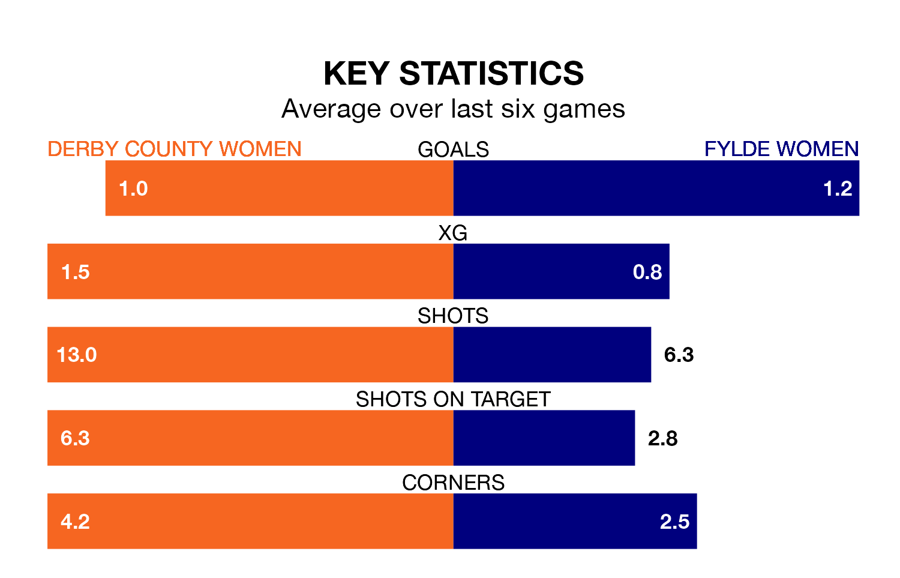

Derby County Women welcome Fylde Women on early Sunday looking to pick up points to end their three-game losing streak.
Derby County's struggles have left them with six points from their last six Women's National League Premier Division – North matches, while their opponents have earned two from a possible 18.
Fylde are bottom of the table after 15 games, of which they have won none and drawn four, earning four points.
Derby County are five places ahead of the visitors in seventh, with seven wins and one draw putting them on 22 points.
With 14 goals in 15 games so far this season, Fylde are the league's third-lowest scorers with 0.9 goals per game. And they are conceding more than average, letting in 52 goals at a rate of 3.5 per game.
The home team, meanwhile, are above average scorers, with 1.8 goals per game, compared to a league average of 1.6. They have conceded 1.2 goals per game.
In the last five years, Derby County and Fylde have played each other on five occasions. Derby County won three of them, Fylde one, and they drew once.
On average, Derby County scored 1.8 goals and Fylde 0.4 in those matches.
Their last meeting was on October 22, when Derby County won 4-0 away.
Derby County's last match was on March 13, a 2-0 loss against Stoke City Women.
Fylde lost 2-1 against Stoke City Women last time out, on March 10.
Updated: 10:19 (UTC), 22/03/24